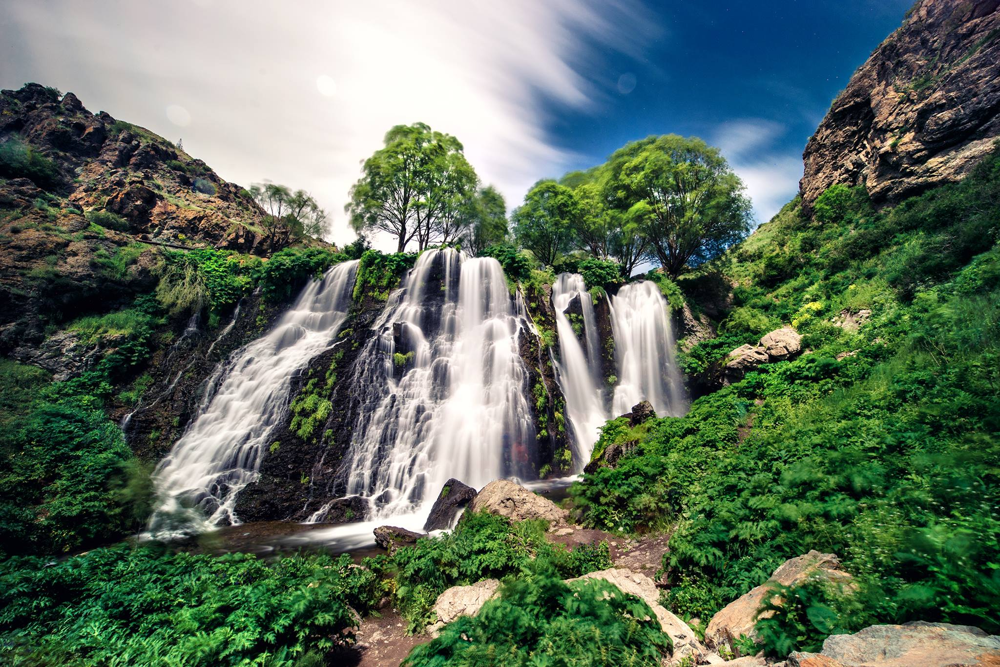
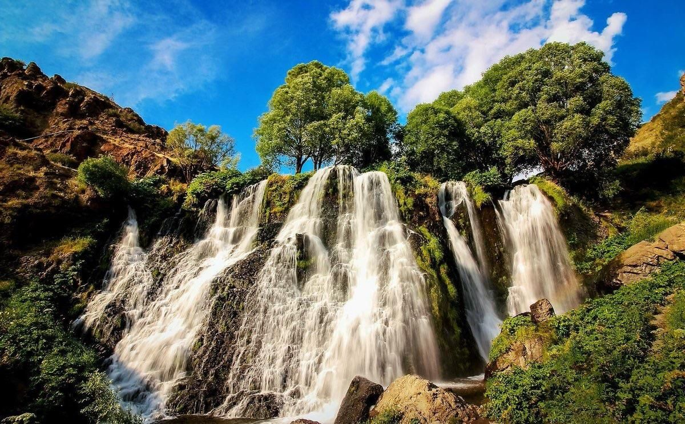
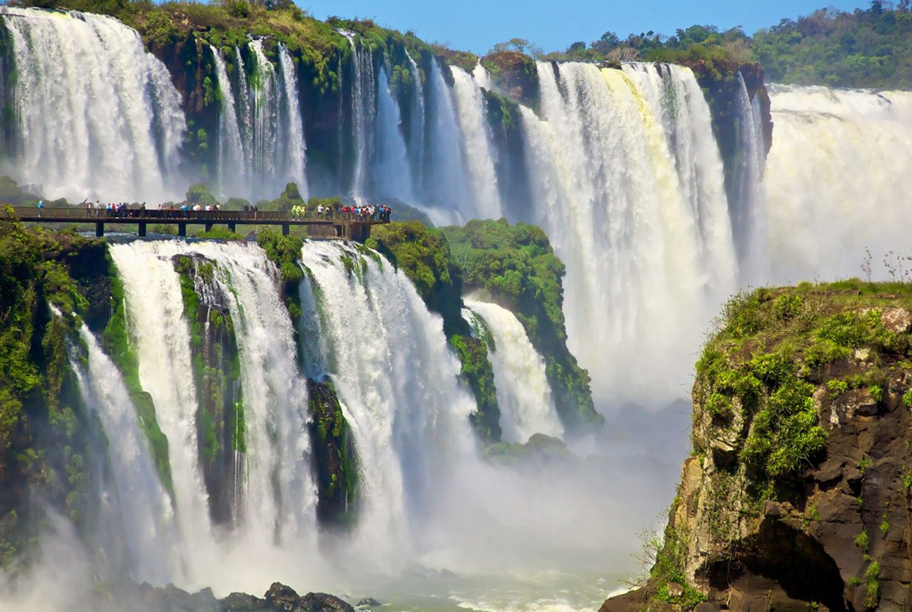
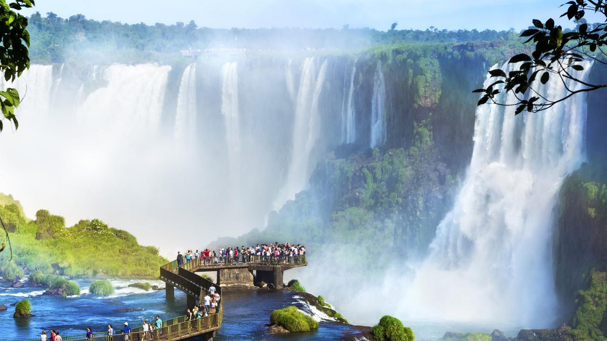
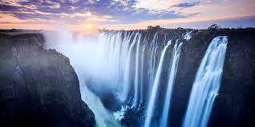
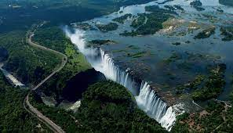
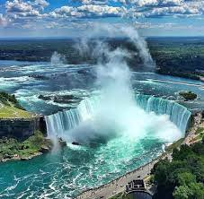

Ջրվեժներ
Շաքիի Ջրվեժ


Շաքիի ջրվեժ, Շաքե, Շաքի, ջրվեժ Հայաստանի Սյունիքի մարզում, Շաքի գետի վրա, Որոտանի կիրճում, Շաքի գյուղից ներքև, 1 կմ հարավ, Սիսիանից 3 կմ դեպի հյուսիս-արևմուտք։ Բարձրությունը 15-17 մ է։
Ջրվեժի տեղանքը իրենից ներկայացնում է խորը կիրճ՝ հարուստ ժայռերով և քարայրներով։ Դրանցում հայտնաբերվել են մարդու գործունեության հետքեր, ինչպես նաև մոխիր, որը թվագրվում է պալեոլիթի ժամանակաշրջանին։ Գեղատեսիլ է։ Գետի ջրի մեծ մասը տարված է Շաքիի ՀԷԿ, ջրվեժով թափնում է նրա փոքր մասը։
Այն գրանցված է Հայաստանի Հանրապետության Բնապահպանության նախարարության բնության պետական հուշարձանների ցանկում։ Բնության պետական հուշարձանների ցանկում ներառվել է 2008 թվականի օգոստոսի 14-ին ընդունված «Հայաստանի Հանրապետության բնության հուշարձանների ցանկը հաստատելու մասին» ՀՀ Կառավարության որոշման համաձայն։
Իգուասուի Ջրվեժ



Իգուասու, ջրվեժ Արգենտինայի Միսիոնես նահանգի և Բրազիլիայի Պարանա նահանգի սահմանին։ Այն լայնությամբ աշխարհի ամենամեծ ջրվեժն է։ Ջրվեժը գետը բաժանում է 2 մասի՝ Վերին և Ստորին Իգուասու։ Իգուասու գետը սկիզբ է առնում Կուրիտիբա քաղաքի մոտ։ Գետի հունի մեծ մասը գտնվում է Բրազիլիայում, սակայն ջրվեժի մեծ մասը Արգենտինայի տարածքում է։
«Իգուասու» անունը ծագել է տուպի-գուարանի լեզվի «y» բառից, որը նշանակում է ջուր, և «ûasú» բառից, որը նշանակում է մեծ։ Ըստ լեգենդի՝ մի աստված պատրաստվում էր ամուսնանալ Նաիպի անունով մի գեղեցիկ կնոջ հետ, ով իր մահկանացու սիրեցյալի՝ Տարոբայի հետ մակույկով փախչում է։ Կատաղությունից աստված գետը մասնատում է՝ ստեղծելով ջրվեժներ, և սիրեցյալներին դատապարտում է հավերժ անկման։ Ջրվեժն առաջին անգամ հայտնաբերել է իսպանացի նվաճող Ալվար Նունես Կաբեսա դե Վական 1541 թվականին։
Վիկտորիա Ջրվեժ


Վիկտորիա, ջրվեժ Հարավային Աֆրիկայի Զամբեզի գետի վրա։ Գտնվում է Զամբիայի և Զիմբաբվեի սահմանին։ Ջրվեժի լայնությունը մոտավորապես 1800 մետր է, իսկ բարձրությունը՝ 120 մետր։ Շոտլանդացի հետազոտող-ճանապարհորդ Դավիթ Լիվինգսթոնը 1855 թվականին լինելով ջրվեժում, այն անվանեց Վիկտորիա թագուհու պատվին։ Տեղաբնիկների մոտ ջրվեժը հայտնի էր «Շառաչող ծուխ» անունով։ Վիկտորիայի ջրվեժը Հարավային Աֆրիկայի տեսարժան վայրերից է և պատկանում է ՅՈՒՆԵՍԿՈ-ի համաշխարհային ժառանգությանը։ Ջրվեժը գտնվում է Զամբիայի «Շառաչող ծուխ» («Mosi-oa-Tunya») և Զիմբաբվեի «Վիկտորիա ջրվեժ» ազգային պարկերի սահմանին։ Վիկտորիան աշխարհի միակ ջրվեժն է, որը միաժամանակ ունի 100 մետրից ավել բարձրություն և 1 կիլոմետրից ավելի լայնություն։
Ջրվեժի շրջակայքի ամենահին հայտնի բնակիչները զբաղվել են որսորդությամբ և հավաքչությամբ, նրանք ջրվեժն անվանել էին «Շառաչող ծուխ»։ Առաջին եվրոպացին, ով տեսել է Վիկտորիա ջրվեժը համարվում է Դավիթ Լիվինգսթոնը։ 1855 թվականի նոյեմբերի 17-ին, երբ Լիվինգսթոնը Զամբեզի գետի ակունքից իջնում էր գետաբերան (1852-1856) հասնում է մի ջրվեժի, որն անվանում է Վիկտորիա թագուհու պատվին:
